-
● Internship Overview
Revitalizing the donor experience for an international plasma collection network through operational improvements.
-
Skills
UX/UI Design
Design Thinking
Agile Methodologies
UX Research
DesignOPs -
Duration
June - August 2023 (Intern)
September - December 2023 (Contract)
-
Tools
Figma
FigJam
Microsoft Office
Confluence/Jira
-

-
CSL Behring is a bio-pharmaceutical company that develops therapies in various areas. It manages CSL Plasma, one of the world's largest plasma collection networks.
-
● Overview
Team organization and responsibility breakdown
-
I interned at CSL Behring between May and December of 2023. During that period, I was a part of an internal SCRUM team working on the Plasma Digital Product ecosystem. The SCRUM Team was made up of about 10 members spanning development, management, QA, and design capabilities, and worked within a 2-week sprint structure.
With them, I made major design and operational improvements, laying the foundation for a more collaborative, systematic, and creative design practice by building a functional design system from scratch, re-organizing file structures to improve on cross-functional legibility, and explored how to refresh the general look and feel of the platform. - 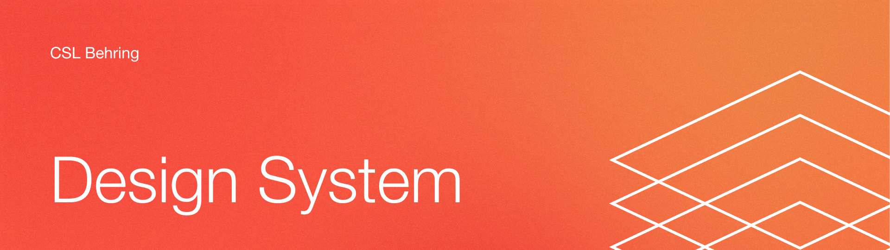
-
● Design System
Building the groundwork for systematic design at CSL
-
When I was onboarded onto the Plasma team, the largest issue that designers were facing was a lack of documentation, standardization, and flexibility engrained in the existing Plasma design systme. My largest responsibility with the Plasma team that spanned the entire duration of my internship was to audit and rebuild the CSL Plasma design system, mostly from scratch.
- 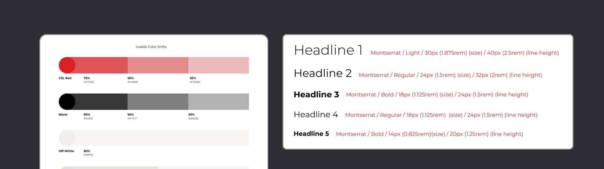
-
The existing design system documentation was limited, outdated, and inherited from an outsourced agency. The first step in taking on this endeavour was to audit the gaps that our current design system had, from the molecular level. We saw that even core elements of our system were poorly documented, and decided to start from scratch, going all the way back to color, type, and spacing.
- 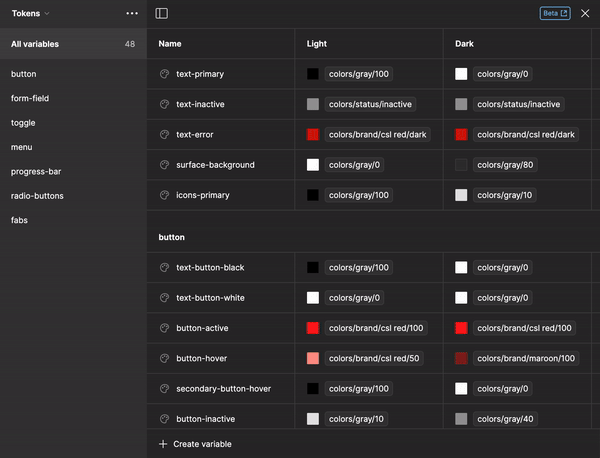 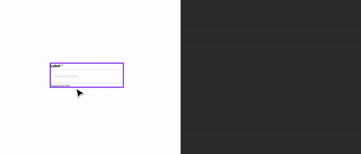
-
I took the initiative to implement all color decisions made by the art director on our team through variables, which were a recent development during my internship. This method was highly needed considering the complex nature of the Plasma app, and also afforded the ability for us to expand to include different color shifts like dark mode if the need ever arises.
More importantly, though, by implementing this feature we would build a pathway for implementation once the dev team caught up. - 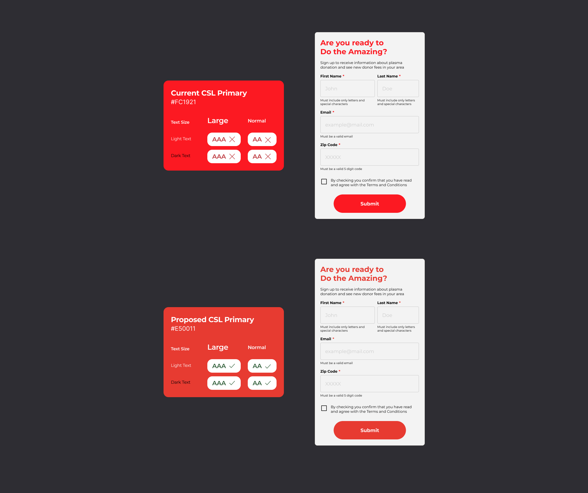
-
During this process of redefining core components, I proposed a subtle but impactful color shift between CSL's standard red color and a more accessible red that would meet accessibility guidelines. Small shifts and adjustments like these were always mocked up to communicate value and impact to business and marketing stakeholders, so that we could advocate better for our users and start the new system off on the right foot.
- 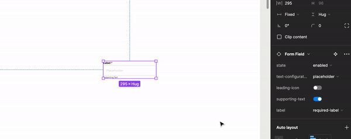 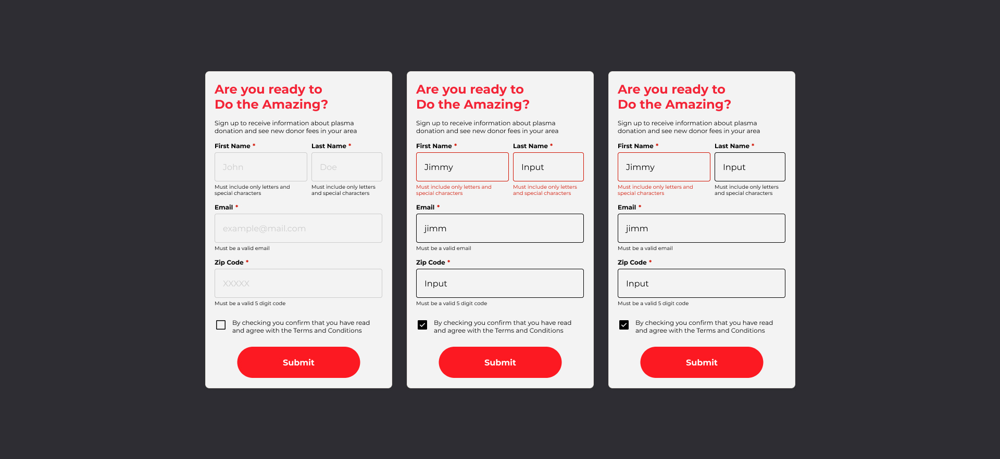
-
I crafted functional, flexible components that could resonably adapt to the requirements of the platform. This process was rounded out by extensive testing at different touchpoints to determine robustness and adaptability.
- 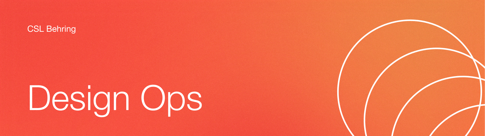
-
● Design Operations
Redesigning the design workflow
-
The design workflow at CSL had sort of dissolved due in part to the fast-paced nature of SCRUM, as well as the lack of a functional design system. My intern project centered around constructing a solution that would inform the way design and design collaboration could happen through Figma file organization and annotative components.
-

-
Nearly all of CSL Plasma was stored on one Figma file, organized by sprint with varying forms of annotation and documentation. Some pages contain screens no longer on the production app, others with screens that were currently in development. The file was bulky, messy, and tedious to navigate.
- 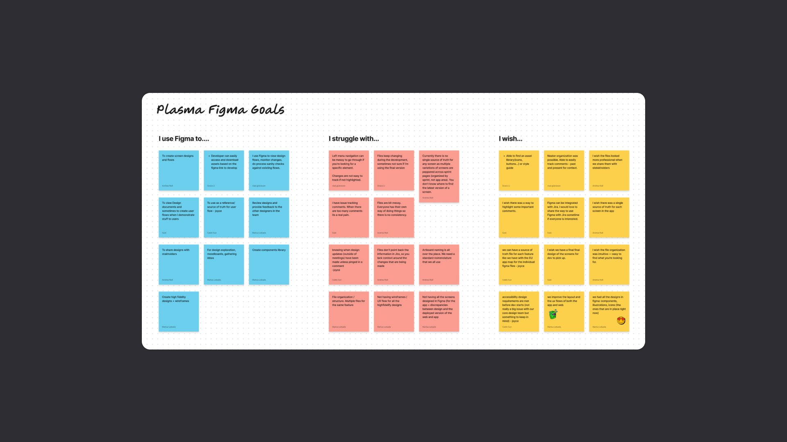
-
To kick off the project, I lead a workshop within my team to map pain pooints in the design—dev—business relationship. This workshop revealed the following issues with our workflow:
-
No integration with our main task manager, Jira.
Organization based on time is really not working.
No way of identifying who is accountable for what. -
This exercise revealed that the poor design workflow was also negatively impacting every other functionality on the team. Lack of file management, organization, and reference points made everyone's lives harder, and reinforced the need for an effort to really challenge and reimagine the way CSL was designing.
- 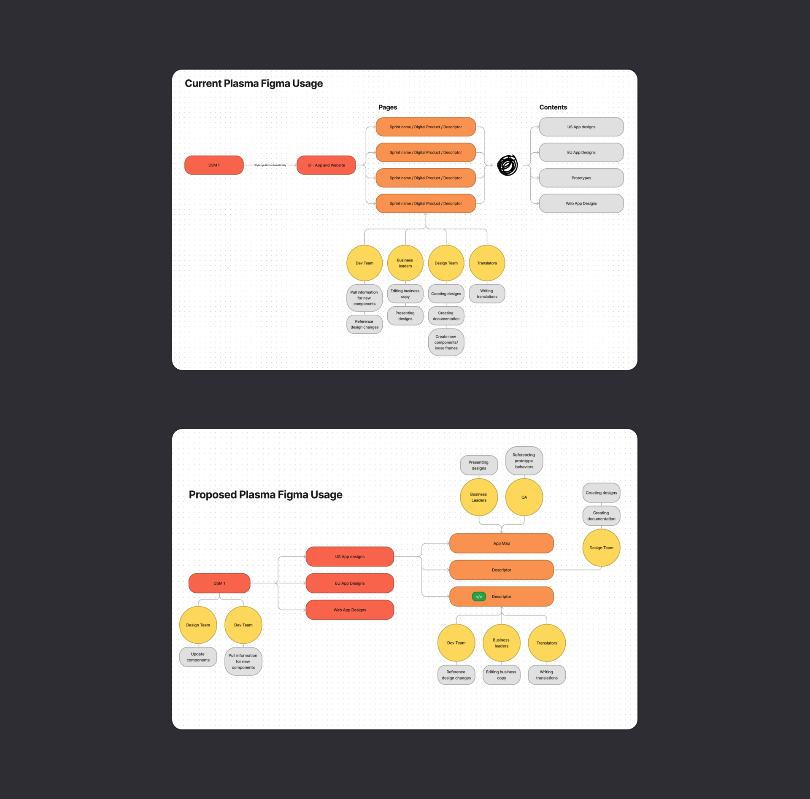
-
In order to visualize this problem, I created a concept map visualizing the different points of interaction within our Figma files, and followed it up with a proposed map that would create dedicated and refined channels for each functionality to interact with. These graphics were crucial in getting this project off the ground and communicating my intent with other team members.
- 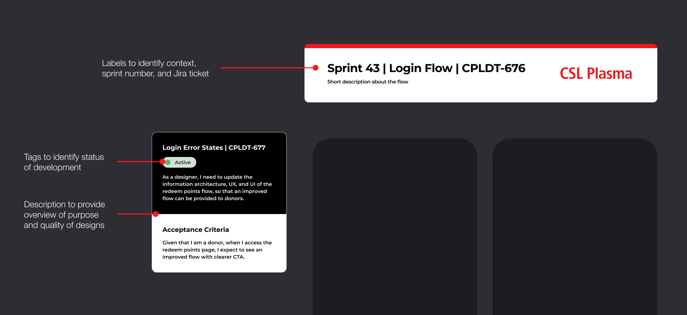 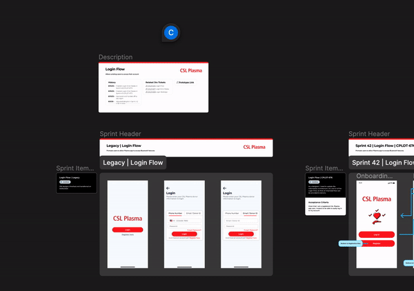
-
From there, I created components intended on sitting next to designed screens to help non-designers cross-reference, navigate, and identify designs. These components also integrated Jira in a custom solution that plugins were unable to achieve, allowing for stakholders to easily find tickets and statuses without needing to adopt new features from their own accounts.
-
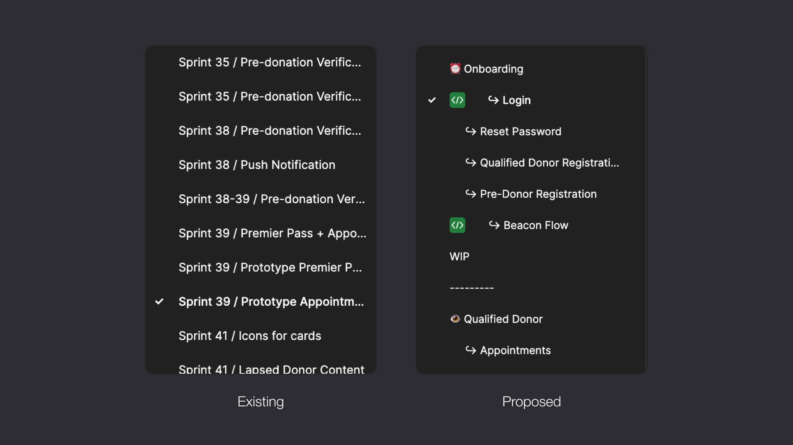

-
I set up a new figma structure that adopts some existing conventions from our old files, but completely changing the organizing schema to be determined based on content, rather than the date of creation. This allows for easier navigation and identification for designers and non-designers alike.
- 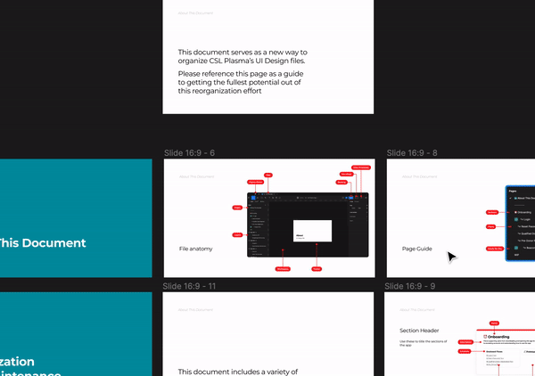
-
The last part of this project involved creating enough documentation to onboard both designers and other stakeholders, giving them the resources and ability to continue the growth and expansion of this method of organizing. Good things take time with the right kind of nurture, and this was my way of doing so.
-
Through several rounds of feedback and refinement, this effort was implemented to a lot of excitement from the team. I was really happy with the results of this project, though acknowledge that my involvement was highly restricted given how I left the team before the system could really get broken in and fully integrate with everyone else's workflows.
That all being said, this was easily my favorite part of my internship, because of how impactful the project was on cross-functional relationships and collaboration as a whole. - 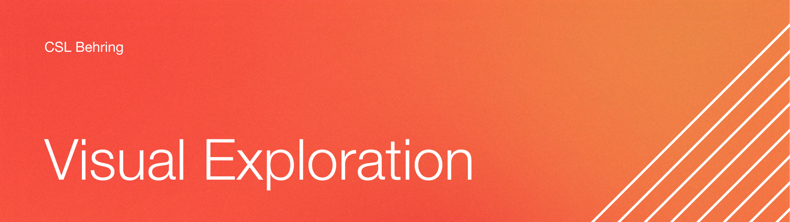
-
● Visual Refresh
Probing and proposing a "total" refresh for the Plasma App
-
A part of the weekly tasks I was responsible for in the SCRUM team was to reconsider the architecture, usability, and visual appearance of key flows in the donor experience.
This effort would ideally exist and be implemented in conjunction with an extensive design system update, but since that wasn't feasible given our limited resources, this task was heavily influenced by the need to balance what the design team *wanted* and what the business and dev team would be able to carry out. -

-
I began by conducting an audit of the Plasma app, looking for key flows or screens in the donor experience that would be both technically feasible to refresh, as well as highly impactful in the user's experience. These key flows would serve as a reference point in a proposed total refresh of CSL Plasma's brand identity, and how that identity would impact a donor's journey.
- 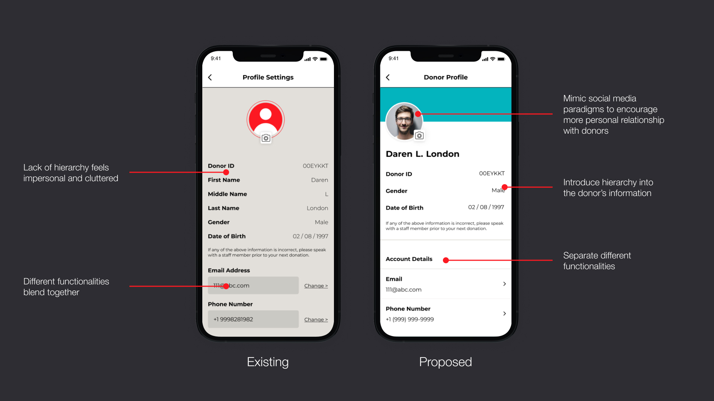 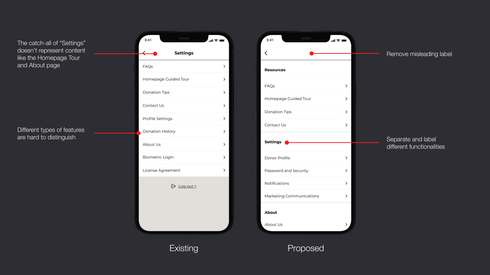
-
Key frames I redesigned include the donor profile and settings page, among many others.
- 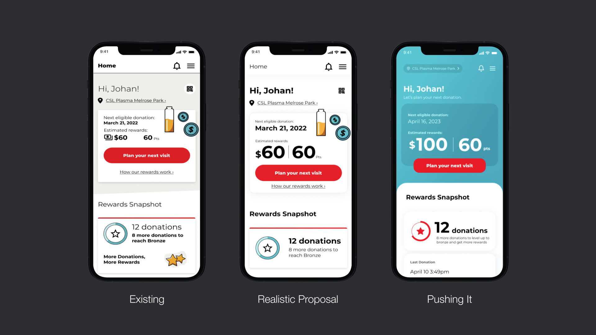
-
This task was highly dependent on attainability and feasibility with the systems and resources our team had access to. Visual explorations that I conducted spanned the highly imaginative to the completely realistic but conservative. These visuals, though ultimately unused were especially helpful in pushing various stakeholders to adopt tangible and realistic changes that influenced our work in the design system.
-
● Reflection
So close yet so far
-
The nearly full year that I spent at CSL included some of the most amazing and productive projects I've ever taken on, both on an individual and group context. I thouroughly enjoyed ever aspect of the work, even including grappling over atomic-level color shifts.
I would like to thank Andrea Noll, my manager, who trusted me to take on these large-scale projects. Her patience and encouragement really allowed for my passions for system design and operations to flourish, and her passion for advocacy for her users inspiired me to really pursue impactful design, within any organization.
While my time at CSL has ended, I've learned a lot and am proud of the work that I was able to complete. Designing good ways to design take time, and while my passion in this sector is strong, I am hungry for a space that will allow me to learn more about the frameworks and tools that can allow for design and development to flourish.